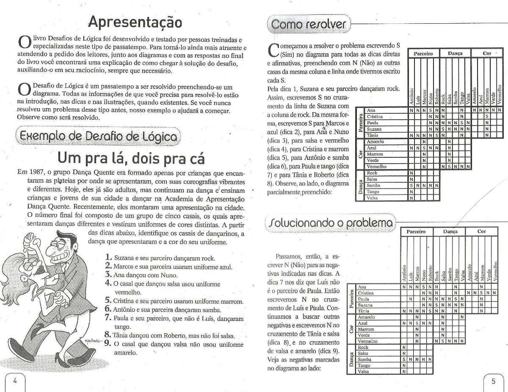

Created: 2019-06-13 Thu 16:54
Termos: átomos, números, variáveis e termos compostos.
x
mortal
'Socrates'
1
3.1415
Xs
NQ
_NaoUsado
_
[1,2,x,Xs]
"uma string marota"
make_date(Y,M,D,date(Y,M,D)).
get_year(date(Y,_,_),Y).
get_month(date(_,M,_),M).
get_day(date(_,_,D),D).
cat(tom).
%% equivalente a:
%% true/0
cat(tom) :- true.
mortal(X) :- man(X).
man(socrates).
man(aristoteles).
?- mortal(socrates).
true.
?- mortal(X).
X = socrates ;
X = aristoteles.
bom(pastel).
bom(bigorna).
bom(vila_grana).
bom(coffee_lab).
bom(casa_da_esfiha).
barato(pastel).
barato(restobar).
barato(casa_da_esfiha).
lugar_para_comer(R) :- bom(R), barato(R).
?- lugar_para_comer(R).
R = pastel ;
R = casa_da_esfiha.
type_of_character(Ch, Type) :-
( Ch >= "a", Ch =< "z" ->
Type = lowercase
; Ch >= "A", Ch =< "Z" ->
Type = uppercase
; Ch >= "0", Ch =< "9" ->
Type = digit
; otherwise ->
Type = other
).
?- type_of_character("0", T).
T = digit.
length?- length([1,2,3], L).
L = 3.
dif?- dif(a,b).
true.
?- dif(a,a).
false.
?- dif(X, socrates),
mortal(X).
X = aristoteles.
?- dif(X, socrates),
dif(aristoteles, X),
mortal(X).
false.
msort?- msort([2,3,1], Sorted).
Sorted = [1, 2, 3].
maplist?- maplist(length_(X), [[1,2], [2,3], [4,5]]).
X = 2.
?- maplist(length_(X), [[1,2], [2,3], [4]]).
false.
permutation?- permutation([1,2,3], Ps).
Ps = [1, 2, 3] ;
Ps = [1, 3, 2] ;
Ps = [2, 1, 3] ;
Ps = [2, 3, 1] ;
Ps = [3, 1, 2] ;
Ps = [3, 2, 1] ;
false.
transpose?- transpose([[1,2,3]
,[4,5,6]
,[7,8,9]], Ts).
Ts = [[1, 4, 7], [2, 5, 8], [3, 6, 9]].
member?- member(b, [a, b, c]).
true ;
false.
?- member(c, [a, b, c]).
true.
?- member(d, [a, b, c]).
false.
2
Constraint Logic Programming over Finite Domains3
Introduz operadores de restrição sobre inteiros.
:- use_module(library(clpfd)).
length_(L, Ls) :- length(Ls, L).
alldif([]).
alldif([X|Xs]) :-
maplist(dif(X), Xs),
alldif(Xs).
is_permutation(Xs, Ys) :-
msort(Xs, Sorted),
msort(Ys, Sorted).
resolver(Pessoas) :-
length(Pessoas, 4),
maplist(length_(4), Pessoas),
transpose(Pessoas, Attrs),
Attrs = [_Casais, Diferenciais, Hoteis, Precos],
maplist(length_(4), Attrs),
permutation([100, 200, 300, 400], Precos),
permutation([ar_condicionado, bela_vista, janta, vaga_garagem], Diferenciais),
permutation([california, floresta_nativa, ponte_grande, volte_sempre], Hoteis),
Pessoas = [GR, JV, JL, LE],
GR = [gisele_rafael, _, _, _],
JV = [jeny_victor, _, _, _],
JL = [juliana_luis, _, _, _],
LE = [lucia_eder, _, _, _],
%% dica 1. O casal que ficou no hotel com vaga na garagem pagou R$
%% 100 a mais na diária do que o casal Juliana e Luis.
member([CVagaGaragem, vaga_garagem, _, PVagaGaragem], Pessoas),
member([juliana_luis, DJulianaLuis, _, PJulianaLuis], Pessoas),
CVagaGaragem \= juliana_luis,
DJulianaLuis \= vaga_garagem,
PVagaGaragem #= PJulianaLuis + 100,
%% dica 2. O casal que se hospedou no hotel Volte Sempre pagou uma
%% diária mais cara do que o casal Jeny e Victor.
member([CVolteSempre, _, volte_sempre, PVolteSempre], Pessoas),
member([jeny_victor, _, HJenyVictor, PJenyVictor], Pessoas),
CVolteSempre \= jeny_victor,
HJenyVictor \= volte_sempre,
PVolteSempre #> PJenyVictor,
%% dica 3. O hotel California não tem a diária mais barata.
member([_, _, california, PCalifornia], Pessoas),
PCalifornia #> 100,
%% dica 4. A diária do hotel Floresta Nativa é mais cara do que a
%% diária do hotel Volte Sempre.
member([_, _, floresta_nativa, PFlorestaNativa], Pessoas),
member([_, _, volte_sempre, PVolteSempre], Pessoas),
PFlorestaNativa #> PVolteSempre,
%% dica 5. O hotel que tem ar condicionado é o Floresta Nativa ou
%% o hotel com a diária de R$ 100.
member([_, ar_condicionado, HArCondicionado, PArCondicionado], Pessoas),
( HArCondicionado == floresta_nativa, PArCondicionado #\= 100
; HArCondicionado \= floresta_nativa, PArCondicionado #= 100 ),
%% dica 6. Sobre o casal Lucia e Eder e o casal que se hospedou no
%% hotel Floresta Nativa, um ficou no quarto com bela vista e o
%% outro pagou R$ 200 de diária, não necessariamente nessa ordem.
member([lucia_eder, DLuciaEder, HLuciaEder, PLuciaEder], Pessoas),
member([CFlorestaNativa, DFlorestaNativa, floresta_nativa, PFlorestaNativa], Pessoas),
CFlorestaNativa \= lucia_eder,
HLuciaEder \= floresta_nativa,
( DLuciaEder == bela_vista, PFlorestaNativa #= 200
; DFlorestaNativa == bela_vista, PLuciaEder #= 200 ).
$ swipl -g 'resolver_formatado(Ps)' desafio2.pl </dev/null
[desafio2].
resolver_formatado(Ps).
Tufe.